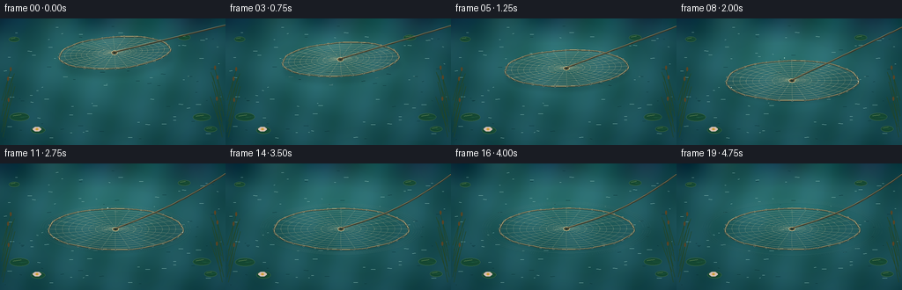
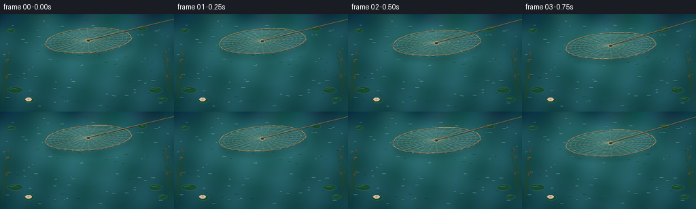

CODING AGENTS AS PIXEL WORLD MODELS
traex/GPT-5.6-Sol · mechanics_0013
点击播放 · 原生 RGB 像素
逐轮保存的候选
回放视频、检查图与代码变化。
每份候选均可单独播放。实际图片检查记录在下方工具轨迹中。
候选 01播放与检查图
点击播放 · 原生 RGB 像素


展开代码变化
--- 上一保存版本
+++ 本次保存版本
@@ -0,0 +1,276 @@
+from pathlib import Path
+import math
+import numpy as np
+from PIL import Image, ImageDraw, ImageFilter
+import artifact_io
+
+# Text-to-video procedural illustration: a cast fishing net is carefully lowered
+# onto a quiet pond. Rendering at 3x resolution provides antialiased fine mesh.
+W, H, N = 256, 144, 20
+S = 3
+RW, RH = W*S, H*S
+rng = np.random.default_rng(1307)
+
+def smoothstep(x):
+ x = max(0.0, min(1.0, x))
+ return x*x*(3.0-2.0*x)
+
+def pts_scaled(points):
+ return [(int(x*S), int(y*S)) for x,y in points]
+
+def line(draw, points, fill, width=1, joint='curve'):
+ draw.line(pts_scaled(points), fill=fill, width=max(1,int(width*S)), joint=joint)
+
+def ellipse(draw, box, fill=None, outline=None, width=1):
+ b = tuple(int(v*S) for v in box)
+ draw.ellipse(b, fill=fill, outline=outline, width=max(1,int(width*S)))
+
+def polygon(draw, points, fill):
+ draw.polygon(pts_scaled(points), fill=fill)
+
+# Stable organic noise field for the water; shifted slightly rather than regenerated.
+small = rng.normal(0, 1, (28, 48))
+noise_img = Image.fromarray(np.uint8(np.clip((small+3)*40,0,255))).resize((RW,RH), Image.Resampling.BICUBIC).filter(ImageFilter.GaussianBlur(10*S))
+noise = (np.asarray(noise_img, dtype=np.float32)-120.0)/120.0
+
+# Stable locations of glitter on small wavelets.
+specks = []
+for _ in range(95):
+ x = rng.uniform(4,252); y = rng.uniform(4,140)
+ length = rng.uniform(1.0,5.5)
+ phase = rng.uniform(0,2*math.pi)
+ specks.append((x,y,length,phase))
+
+# Natural shoreline details kept at the edges so the net remains the focus.
+lily_data = [
+ (22,112,11,4.5,-0.15), (43,127,8,3.7,0.24), (229,112,10,4.1,0.16),
+ (239,126,7,3.1,-0.25), (16,24,6,2.7,0.1), (209,22,7,3.0,-0.2)
+]
+
+def water_background(frame):
+ t = frame/4.0
+ yy, xx = np.mgrid[0:RH,0:RW].astype(np.float32)
+ X, Y = xx/S, yy/S
+ # Deep teal pond gradient with a warm reflected opening in the middle.
+ vign = ((X-128)/160)**2 + ((Y-69)/105)**2
+ shimmer = (np.sin(X*.105 + Y*.035 + t*.65) + .55*np.sin(X*.042-Y*.11-t*.42))
+ fine = .45*np.sin(X*.31 + Y*.083 + t*.9)
+ warm = np.exp(-(((X-124)/82)**2 + ((Y-42)/38)**2))
+ arr = np.empty((RH,RW,3), np.float32)
+ arr[...,0] = 32 + 14*warm - 12*vign + 4*shimmer + 5*noise
+ arr[...,1] = 91 + 25*warm - 20*vign + 5*shimmer + 7*noise
+ arr[...,2] = 94 + 22*warm - 15*vign + 7*shimmer + 8*noise + 2*fine
+ # Dark reflected tree masses at the far upper margin.
+ upper = np.clip((28-Y)/28,0,1)
+ arr[...,0] -= upper*(8+5*np.sin(X*.08))
+ arr[...,1] -= upper*(15+8*np.sin(X*.06+1))
+ arr[...,2] -= upper*12
+ return Image.fromarray(np.uint8(np.clip(arr,0,255)), 'RGB')
+
+def draw_pond_details(im, frame):
+ t=frame/4.0
+ d=ImageDraw.Draw(im,'RGBA')
+ # Long horizontal wave glints and dark troughs.
+ for i,(x,y,L,ph) in enumerate(specks):
+ visibility = .5+.5*math.sin(ph+t*.8)
+ y2 = y + 0.45*math.sin(ph+t*.55)
+ col = (160,211,202,int(16+31*visibility)) if i%3 else (8,48,54,26)
+ line(d, [(x-L/2,y2),(x+L/2,y2+.15*math.sin(ph))], col, .42 if i%3 else .65)
+ # Soft cloud reflection streaks.
+ refl=Image.new('RGBA',(RW,RH),(0,0,0,0)); rd=ImageDraw.Draw(refl,'RGBA')
+ for k in range(6):
+ y=31+k*7+math.sin(t*.3+k)*.5
+ rd.ellipse((int((52-k*3)*S),int(y*S),int((202+k*2)*S),int((y+2.0)*S)),fill=(197,220,204,7))
+ im.alpha_composite(refl.filter(ImageFilter.GaussianBlur(4*S)))
+ d=ImageDraw.Draw(im,'RGBA')
+ # Lily pads with a notch and dimensional highlight.
+ for j,(x,y,rx,ry,ang) in enumerate(lily_data):
+ bob=.35*math.sin(t*.6+j)
+ ellipse(d,(x-rx,y-ry+bob,x+rx,y+ry+bob),(22,75,53,225),(81,124,73,130),.6)
+ notch=[(x,y+bob),(x+rx*1.02,y+ry*ang+bob),(x+rx*.22,y+ry*.15+bob)]
+ polygon(d,notch,(32,94,69,255))
+ line(d,[(x-rx*.65,y-ry*.25+bob),(x+rx*.2,y-ry*.55+bob)],(142,170,102,85),.45)
+ # A tiny water-lily in the lower left.
+ for a in range(6):
+ ang=a*math.pi/3
+ cx=42+math.cos(ang)*2.4; cy=126+math.sin(ang)*1.3
+ ellipse(d,(cx-2.4,cy-1.4,cx+2.4,cy+1.4),(224,200,188,235))
+ ellipse(d,(40.6,124.7,43.4,127.3),(218,164,58,255))
+ # Reeds entering from left/right banks.
+ for side in [0,1]:
+ base_x = 2 if side==0 else 254
+ sign = 1 if side==0 else -1
+ for k in range(8):
+ bx=base_x+sign*(k%3)*1.4; by=93+k*6.0
+ tipx=bx+sign*(10+3*math.sin(k*1.7)); tipy=by-34-rng_static(k,side)*13
+ line(d,[(bx,by),(tipx,tipy)],(35,73,42,180),.75)
+ if k%3==0:
+ ellipse(d,(tipx-1.0,tipy-4,tipx+1.0,tipy+1),(91,71,39,210))
+
+def rng_static(k,side):
+ return ((k*37+side*19)%17)/17.0
+
+def net_shape(frame):
+ # Controlled descent for 2.5s, then a barely perceptible buoyant settle.
+ p=smoothstep(frame/10.0)
+ contact=max(0.0,min(1.0,(frame-8)/5.0))
+ cx=130.0 + 1.2*math.sin(p*math.pi*.6)
+ cy=39.0 + 35.5*p
+ if frame>10:
+ cy += 0.55*math.sin((frame-10)*.65)*math.exp(-(frame-10)/7)
+ rx=63.0+13.0*p
+ ry=18.0+5.4*p
+ # A slight tilt relaxes as the mesh meets the flat surface.
+ tilt=-0.075*(1-p)
+ return cx,cy,rx,ry,tilt,p,contact
+
+def boundary_points(cx,cy,rx,ry,tilt,n=96):
+ out=[]
+ ct,st=math.cos(tilt),math.sin(tilt)
+ for i in range(n):
+ a=2*math.pi*i/n
+ wav=1+.010*math.sin(5*a+0.8)+.006*math.sin(11*a)
+ ux=rx*math.cos(a)*wav; uy=ry*math.sin(a)*wav
+ out.append((cx+ux*ct-uy*st,cy+ux*st+uy*ct))
+ return out
+
+def ep(cx,cy,rx,ry,tilt,a,f=1.0):
+ ux=rx*f*math.cos(a); uy=ry*f*math.sin(a)
+ return (cx+ux*math.cos(tilt)-uy*math.sin(tilt), cy+ux*math.sin(tilt)+uy*math.cos(tilt))
+
+def draw_ripples(im, frame, geom):
+ cx,cy,rx,ry,tilt,p,contact=geom
+ if frame < 8: return
+ age=(frame-8)/4.0
+ layer=Image.new('RGBA',(RW,RH),(0,0,0,0)); d=ImageDraw.Draw(layer,'RGBA')
+ # Contact ripples emanate beyond the weighted perimeter.
+ for k in range(4):
+ a=age-k*.34
+ if a<=0: continue
+ fade=max(0,1-a/3.8)
+ ex=rx+3+a*8.5; ey=ry+1.2+a*3.0
+ box=(cx-ex,cy-ey,cx+ex,cy+ey)
+ ellipse(d,box,None,(178,224,215,int(78*fade)),.65)
+ # Neighboring dark edge gives the thin ring optical depth.
+ box2=(cx-ex,cy-ey+.8,cx+ex,cy+ey+.8)
+ ellipse(d,box2,None,(10,70,73,int(38*fade)),.55)
+ im.alpha_composite(layer.filter(ImageFilter.GaussianBlur(.18*S)))
+
+
+def draw_net(im, frame, geom):
+ cx,cy,rx,ry,tilt,p,contact=geom
+ boundary=boundary_points(cx,cy,rx,ry,tilt)
+ # Elevated net casts a softened oval shadow that converges at contact.
+ h=1-p
+ shadow=Image.new('RGBA',(RW,RH),(0,0,0,0)); sd=ImageDraw.Draw(shadow,'RGBA')
+ offy=2.0+7.0*h
+ polygon(sd,[(x+1.5*h,y+offy) for x,y in boundary],(3,29,31,int(20+24*h)))
+ # Hint the mesh in its shadow, improving the above-water read.
+ for j in range(0,24,3):
+ a=2*math.pi*j/24
+ q=ep(cx+1.5*h,cy+offy,rx,ry,tilt,a)
+ line(sd,[(cx+1.5*h,cy+offy),q],(0,21,22,int(10+18*h)),.55)
+ shadow=shadow.filter(ImageFilter.GaussianBlur((1.1+2.1*h)*S))
+ im.alpha_composite(shadow)
+
+ net=Image.new('RGBA',(RW,RH),(0,0,0,0)); d=ImageDraw.Draw(net,'RGBA')
+ # A faint translucent body of wet mesh.
+ polygon(d,boundary,(170,188,162,int(8+10*(1-contact))))
+ thread=(194,186,145,int(142-26*contact))
+ thread_hi=(235,223,174,int(90-20*contact))
+ # Radial cords, with tiny irregularity so this does not look like a perfect graphic.
+ for j in range(28):
+ a=2*math.pi*j/28 + .006*math.sin(j*2.3)
+ end=ep(cx,cy,rx,ry,tilt,a)
+ mid=ep(cx,cy,rx,ry,tilt,a,.52)
+ normal=(-math.sin(a), math.cos(a))
+ mid=(mid[0]+normal[0]*.55*math.sin(j*1.9),mid[1]+normal[1]*.20*math.sin(j*1.9))
+ line(d,[(cx,cy-1.0),mid,end],thread,.46)
+ if j%4==0:
+ line(d,[(cx-.2,cy-1.25),mid],thread_hi,.22)
+ # Concentric knotted mesh rings.
+ for k in range(1,10):
+ f=k/10.0
+ ring=[]
+ for q in range(80):
+ a=2*math.pi*q/79
+ ff=f*(1+.006*math.sin(7*a+k))
+ ring.append(ep(cx,cy,rx,ry,tilt,a,ff))
+ line(d,ring,thread,.40)
+ # Small knots at selected crossings, subtle but legible.
+ for k in [3,5,7,9]:
+ f=k/10
+ for j in range(0,28,2):
+ a=2*math.pi*j/28
+ x,y=ep(cx,cy,rx,ry,tilt,a,f)
+ ellipse(d,(x-.34,y-.34,x+.34,y+.34),(218,206,158,int(145-30*contact)))
+ # Braided weighted perimeter.
+ line(d,boundary+[boundary[0]],(73,67,48,185),2.15)
+ line(d,[(x,y-.34) for x,y in boundary]+[(boundary[0][0],boundary[0][1]-.34)],(225,208,151,220),.75)
+ # Lead sinkers / floats around the perimeter.
+ for j in range(32):
+ a=2*math.pi*j/32
+ x,y=ep(cx,cy,rx,ry,tilt,a,1.005)
+ # bottom weights are marginally darker
+ c=(67,71,62,235) if math.sin(a)>-.2 else (128,119,88,235)
+ ellipse(d,(x-1.05,y-.72,x+1.05,y+.72),c,(216,205,164,130),.35)
+ # Central horn where the hand-line gathers the radiating cords.
+ ellipse(d,(cx-3.6,cy-2.4,cx+3.6,cy+2.4),(91,81,56,245),(229,211,156,220),.75)
+ ellipse(d,(cx-1.3,cy-1.0,cx+1.3,cy+1.0),(26,48,44,220))
+ im.alpha_composite(net)
+
+ # Water sheen crosses over sections after contact: a clear partial-submersion cue.
+ if contact>0:
+ sheen=Image.new('RGBA',(RW,RH),(0,0,0,0)); sh=ImageDraw.Draw(sheen,'RGBA')
+ alpha=int(35*contact)
+ for k in range(4):
+ y=cy-9+k*6.2+math.sin(frame*.35+k)*.45
+ line(sh,[(cx-rx*.82,y),(cx+rx*.82,y+.8*math.sin(k))],(141,210,202,alpha),1.15)
+ # lower half receives a thin blue-green wash, clipped by an ellipse mask
+ wash=Image.new('RGBA',(RW,RH),(0,0,0,0)); wd=ImageDraw.Draw(wash,'RGBA')
+ polygon(wd,boundary,(20,105,106,int(13*contact)))
+ im.alpha_composite(wash)
+ im.alpha_composite(sheen.filter(ImageFilter.GaussianBlur(.45*S)))
+
+ # Retrieval rope leads offscreen to a person outside the shot. It is taut in air,
+ # then gains a small, physically readable slack curve once the net floats.
+ rope=Image.new('RGBA',(RW,RH),(0,0,0,0)); rd=ImageDraw.Draw(rope,'RGBA')
+ slack=contact
+ rope_pts=[]
+ for q in range(34):
+ u=q/33
+ # from central horn toward top-right edge
+ x=cx+(267-cx)*u
+ y=(cy-1)+(5-(cy-1))*u + slack*9*math.sin(math.pi*u)
+ rope_pts.append((x,y))
+ line(rd,rope_pts,(63,57,40,210),2.0)
+ line(rd,[(x,y-.45) for x,y in rope_pts],(230,211,155,225),.62)
+ im.alpha_composite(rope)
+
+ # A few droplets and tiny dimples only at initial touch.
+ if 8 <= frame <= 12:
+ dd=ImageDraw.Draw(im,'RGBA')
+ f=(frame-8)/4
+ for j,a in enumerate([.18,2.7,4.6]):
+ x,y=ep(cx,cy,rx,ry,tilt,a,1.02)
+ yy=y-2.7+f*3.2+j*.15
+ ellipse(dd,(x-.45,yy-.75,x+.45,yy+.15),(191,229,219,int(120*(1-f)+20)))
+
+frames=[]
+for i in range(N):
+ base=water_background(i).convert('RGBA')
+ draw_pond_details(base,i)
+ geom=net_shape(i)
+ draw_ripples(base,i,geom)
+ draw_net(base,i,geom)
+ # Gentle cinematic edge falloff.
+ arr=np.asarray(base.convert('RGB'),dtype=np.float32)
+ yy,xx=np.mgrid[0:RH,0:RW]
+ vig=np.clip(((xx-RW/2)/(RW*.72))**2+((yy-RH/2)/(RH*.76))**2,0,1)
+ arr *= (1-.10*vig[...,None])
+ img=Image.fromarray(np.uint8(np.clip(arr,0,255))).resize((W,H),Image.Resampling.LANCZOS)
+ frames.append(np.asarray(img,dtype=np.uint8))
+
+frames=np.stack(frames,axis=0)
+artifact_io.save(frames,Path(__file__).resolve().parent)
+print('saved',frames.shape,frames.dtype)
可观测工具轨迹
实际执行的命令与返回图片。
命令 1exit 0
/bin/bash -lc "cat prompt.txt && printf '\\n---RULES---\\n' && cat GENERATION_RULES.md && printf '\\n---SPEC---\\n' && cat task_spec.json"
命令 2exit 1
/bin/bash -lc "find . -maxdepth 2 -type f -printf '%p\\n' | sort && printf '\\nTOOLS\\n' && command -v ffmpeg && command -v python3 && python3 - <<'PY'
try:
import cv2; print('cv2',cv2.__version__)
except Exception as e: print('no cv2',e)
try:
from PIL import Image; print('pillow ok')
except Exception as e: print('no pillow',e)
try:
import numpy; print('numpy',numpy.__version__)
except Exception as e: print('no numpy',e)
PY"命令 3exit 0
/bin/bash -lc "cat artifact_io.py && python3 - <<'PY' mods=['PIL','numpy','cv2','imageio'] for m in mods: try: x=__import__(m); print(m,'ok',getattr(x,'__version__','')) except Exception as e: print(m,'NO',repr(e)) PY"
命令 4exit 0
/bin/bash -lc "cat > generate.py <<'PY'
from pathlib import Path
import math
import numpy as np
from PIL import Image, ImageDraw, ImageFilter
import artifact_io
# Text-to-video procedural illustration: a cast fishing net is carefully lowered
# onto a quiet pond. Rendering at 3x resolution provides antialiased fine mesh.
W, H, N = 256, 144, 20
S = 3
RW, RH = W*S, H*S
rng = np.random.default_rng(1307)
def smoothstep(x):
x = max(0.0, min(1.0, x))
return x*x*(3.0-2.0*x)
def pts_scaled(points):
return [(int(x*S), int(y*S)) for x,y in points]
def line(draw, points, fill, width=1, joint='curve'):
draw.line(pts_scaled(points), fill=fill, width=max(1,int(width*S)), joint=joint)
def ellipse(draw, box, fill=None, outline=None, width=1):
b = tuple(int(v*S) for v in box)
draw.ellipse(b, fill=fill, outline=outline, width=max(1,int(width*S)))
def polygon(draw, points, fill):
draw.polygon(pts_scaled(points), fill=fill)
# Stable organic noise field for the water; shifted slightly rather than regenerated.
small = rng.normal(0, 1, (28, 48))
noise_img = Image.fromarray(np.uint8(np.clip((small+3)*40,0,255))).resize((RW,RH), Image.Resampling.BICUBIC).filter(ImageFilter.GaussianBlur(10*S))
noise = (np.asarray(noise_img, dtype=np.float32)-120.0)/120.0
# Stable locations of glitter on small wavelets.
specks = []
for _ in range(95):
x = rng.uniform(4,252); y = rng.uniform(4,140)
length = rng.uniform(1.0,5.5)
phase = rng.uniform(0,2*math.pi)
specks.append((x,y,length,phase))
# Natural shoreline details kept at the edges so the net remains the focus.
lily_data = [
(22,112,11,4.5,-0.15), (43,127,8,3.7,0.24), (229,112,10,4.1,0.16),
(239,126,7,3.1,-0.25), (16,24,6,2.7,0.1), (209,22,7,3.0,-0.2)
]
def water_background(frame):
t = frame/4.0
yy, xx = np.mgrid[0:RH,0:RW].astype(np.float32)
X, Y = xx/S, yy/S
# Deep teal pond gradient with a warm reflected opening in the middle.
vign = ((X-128)/160)**2 + ((Y-69)/105)**2
shimmer = (np.sin(X*.105 + Y*.035 + t*.65) + .55*np.sin(X*.042-Y*.11-t*.42))
fine = .45*np.sin(X*.31 + Y*.083 + t*.9)
warm = np.exp(-(((X-124)/82)**2 + ((Y-42)/38)**2))
arr = np.empty((RH,RW,3), np.float32)
arr[...,0] = 32 + 14*warm - 12*vign + 4*shimmer + 5*noise
arr[...,1] = 91 + 25*warm - 20*vign + 5*shimmer + 7*noise
arr[...,2] = 94 + 22*warm - 15*vign + 7*shimmer + 8*noise + 2*fine
# Dark reflected tree masses at the far upper margin.
upper = np.clip((28-Y)/28,0,1)
arr[...,0] -= upper*(8+5*np.sin(X*.08))
arr[...,1] -= upper*(15+8*np.sin(X*.06+1))
arr[...,2] -= upper*12
return Image.fromarray(np.uint8(np.clip(arr,0,255)), 'RGB')
def draw_pond_details(im, frame):
t=frame/4.0
d=ImageDraw.Draw(im,'RGBA')
# Long horizontal wave glints and dark troughs.
for i,(x,y,L,ph) in enumerate(specks):
visibility = .5+.5*math.sin(ph+t*.8)
y2 = y + 0.45*math.sin(ph+t*.55)
col = (160,211,202,int(16+31*visibility)) if i%3 else (8,48,54,26)
line(d, [(x-L/2,y2),(x+L/2,y2+.15*math.sin(ph))], col, .42 if i%3 else .65)
# Soft cloud reflection streaks.
refl=Image.new('RGBA',(RW,RH),(0,0,0,0)); rd=ImageDraw.Draw(refl,'RGBA')
for k in range(6):
y=31+k*7+math.sin(t*.3+k)*.5
rd.ellipse((int((52-k*3)*S),int(y*S),int((202+k*2)*S),int((y+2.0)*S)),fill=(197,220,204,7))
im.alpha_composite(refl.filter(ImageFilter.GaussianBlur(4*S)))
d=ImageDraw.Draw(im,'RGBA')
# Lily pads with a notch and dimensional highlight.
for j,(x,y,rx,ry,ang) in enumerate(lily_data):
bob=.35*math.sin(t*.6+j)
ellipse(d,(x-rx,y-ry+bob,x+rx,y+ry+bob),(22,75,53,225),(81,124,73,130),.6)
notch=[(x,y+bob),(x+rx*1.02,y+ry*ang+bob),(x+rx*.22,y+ry*.15+bob)]
polygon(d,notch,(32,94,69,255))
line(d,[(x-rx*.65,y-ry*.25+bob),(x+rx*.2,y-ry*.55+bob)],(142,170,102,85),.45)
# A tiny water-lily in the lower left.
for a in range(6):
ang=a*math.pi/3
cx=42+math.cos(ang)*2.4; cy=126+math.sin(ang)*1.3
ellipse(d,(cx-2.4,cy-1.4,cx+2.4,cy+1.4),(224,200,188,235))
ellipse(d,(40.6,124.7,43.4,127.3),(218,164,58,255))
# Reeds entering from left/right banks.
for side in [0,1]:
base_x = 2 if side==0 else 254
sign = 1 if side==0 else -1
for k in range(8):
bx=base_x+sign*(k%3)*1.4; by=93+k*6.0
tipx=bx+sign*(10+3*math.sin(k*1.7)); tipy=by-34-rng_static(k,side)*13
line(d,[(bx,by),(tipx,tipy)],(35,73,42,180),.75)
if k%3==0:
ellipse(d,(tipx-1.0,tipy-4,tipx+1.0,tipy+1),(91,71,39,210))
def rng_static(k,side):
return ((k*37+side*19)%17)/17.0
def net_shape(frame):
# Controlled descent for 2.5s, then a barely perceptible buoyant settle.
p=smoothstep(frame/10.0)
contact=max(0.0,min(1.0,(frame-8)/5.0))
cx=130.0 + 1.2*math.sin(p*math.pi*.6)
cy=39.0 + 35.5*p
if frame>10:
cy += 0.55*math.sin((frame-10)*.65)*math.exp(-(frame-10)/7)
rx=63.0+13.0*p
ry=18.0+5.4*p
# A slight tilt relaxes as the mesh meets the flat surface.
tilt=-0.075*(1-p)
return cx,cy,rx,ry,tilt,p,contact
def boundary_points(cx,cy,rx,ry,tilt,n=96):
out=[]
ct,st=math.cos(tilt),math.sin(tilt)
for i in range(n):
a=2*math.pi*i/n
wav=1+.010*math.sin(5*a+0.8)+.006*math.sin(11*a)
ux=rx*math.cos(a)*wav; uy=ry*math.sin(a)*wav
out.append((cx+ux*ct-uy*st,cy+ux*st+uy*ct))
return out
def ep(cx,cy,rx,ry,tilt,a,f=1.0):
ux=rx*f*math.cos(a); uy=ry*f*math.sin(a)
return (cx+ux*math.cos(tilt)-uy*math.sin(tilt), cy+ux*math.sin(tilt)+uy*math.cos(tilt))
def draw_ripples(im, frame, geom):
cx,cy,rx,ry,tilt,p,contact=geom
if frame < 8: return
age=(frame-8)/4.0
layer=Image.new('RGBA',(RW,RH),(0,0,0,0)); d=ImageDraw.Draw(layer,'RGBA')
# Contact ripples emanate beyond the weighted perimeter.
for k in range(4):
a=age-k*.34
if a<=0: continue
fade=max(0,1-a/3.8)
ex=rx+3+a*8.5; ey=ry+1.2+a*3.0
box=(cx-ex,cy-ey,cx+ex,cy+ey)
ellipse(d,box,None,(178,224,215,int(78*fade)),.65)
# Neighboring dark edge gives the thin ring optical depth.
box2=(cx-ex,cy-ey+.8,cx+ex,cy+ey+.8)
ellipse(d,box2,None,(10,70,73,int(38*fade)),.55)
im.alpha_composite(layer.filter(ImageFilter.GaussianBlur(.18*S)))
def draw_net(im, frame, geom):
cx,cy,rx,ry,tilt,p,contact=geom
boundary=boundary_points(cx,cy,rx,ry,tilt)
# Elevated net casts a softened oval shadow that converges at contact.
h=1-p
shadow=Image.new('RGBA',(RW,RH),(0,0,0,0)); sd=ImageDraw.Draw(shadow,'RGBA')
offy=2.0+7.0*h
polygon(sd,[(x+1.5*h,y+offy) for x,y in boundary],(3,29,31,int(20+24*h)))
# Hint the mesh in its shadow, improving the above-water read.
for j in range(0,24,3):
a=2*math.pi*j/24
q=ep(cx+1.5*h,cy+offy,rx,ry,tilt,a)
line(sd,[(cx+1.5*h,cy+offy),q],(0,21,22,int(10+18*h)),.55)
shadow=shadow.filter(ImageFilter.GaussianBlur((1.1+2.1*h)*S))
im.alpha_composite(shadow)
net=Image.new('RGBA',(RW,RH),(0,0,0,0)); d=ImageDraw.Draw(net,'RGBA')
# A faint translucent body of wet mesh.
polygon(d,boundary,(170,188,162,int(8+10*(1-contact))))
thread=(194,186,145,int(142-26*contact))
thread_hi=(235,223,174,int(90-20*contact))
# Radial cords, with tiny irregularity so this does not look like a perfect graphic.
for j in range(28):
a=2*math.pi*j/28 + .006*math.sin(j*2.3)
end=ep(cx,cy,rx,ry,tilt,a)
mid=ep(cx,cy,rx,ry,tilt,a,.52)
normal=(-math.sin(a), math.cos(a))
mid=(mid[0]+normal[0]*.55*math.sin(j*1.9),mid[1]+normal[1]*.20*math.sin(j*1.9))
line(d,[(cx,cy-1.0),mid,end],thread,.46)
if j%4==0:
line(d,[(cx-.2,cy-1.25),mid],thread_hi,.22)
# Concentric knotted mesh rings.
for k in range(1,10):
f=k/10.0
ring=[]
for q in range(80):
a=2*math.pi*q/79
ff=f*(1+.006*math.sin(7*a+k))
ring.append(ep(cx,cy,rx,ry,tilt,a,ff))
line(d,ring,thread,.40)
# Small knots at selected crossings, subtle but legible.
for k in [3,5,7,9]:
f=k/10
for j in range(0,28,2):
a=2*math.pi*j/28
x,y=ep(cx,cy,rx,ry,tilt,a,f)
ellipse(d,(x-.34,y-.34,x+.34,y+.34),(218,206,158,int(145-30*contact)))
# Braided weighted perimeter.
line(d,boundary+[boundary[0]],(73,67,48,185),2.15)
line(d,[(x,y-.34) for x,y in boundary]+[(boundary[0][0],boundary[0][1]-.34)],(225,208,151,220),.75)
# Lead sinkers / floats around the perimeter.
for j in range(32):
a=2*math.pi*j/32
x,y=ep(cx,cy,rx,ry,tilt,a,1.005)
# bottom weights are marginally darker
c=(67,71,62,235) if math.sin(a)>-.2 else (128,119,88,235)
ellipse(d,(x-1.05,y-.72,x+1.05,y+.72),c,(216,205,164,130),.35)
# Central horn where the hand-line gathers the radiating cords.
ellipse(d,(cx-3.6,cy-2.4,cx+3.6,cy+2.4),(91,81,56,245),(229,211,156,220),.75)
ellipse(d,(cx-1.3,cy-1.0,cx+1.3,cy+1.0),(26,48,44,220))
im.alpha_composite(net)
# Water sheen crosses over sections after contact: a clear partial-submersion cue.
if contact>0:
sheen=Image.new('RGBA',(RW,RH),(0,0,0,0)); sh=ImageDraw.Draw(sheen,'RGBA')
alpha=int(35*contact)
for k in range(4):
y=cy-9+k*6.2+math.sin(frame*.35+k)*.45
line(sh,[(cx-rx*.82,y),(cx+rx*.82,y+.8*math.sin(k))],(141,210,202,alpha),1.15)
# lower half receives a thin blue-green wash, clipped by an ellipse mask
wash=Image.new('RGBA',(RW,RH),(0,0,0,0)); wd=ImageDraw.Draw(wash,'RGBA')
polygon(wd,boundary,(20,105,106,int(13*contact)))
im.alpha_composite(wash)
im.alpha_composite(sheen.filter(ImageFilter.GaussianBlur(.45*S)))
# Retrieval rope leads offscreen to a person outside the shot. It is taut in air,
# then gains a small, physically readable slack curve once the net floats.
rope=Image.new('RGBA',(RW,RH),(0,0,0,0)); rd=ImageDraw.Draw(rope,'RGBA')
slack=contact
rope_pts=[]
for q in range(34):
u=q/33
# from central horn toward top-right edge
x=cx+(267-cx)*u
y=(cy-1)+(5-(cy-1))*u + slack*9*math.sin(math.pi*u)
rope_pts.append((x,y))
line(rd,rope_pts,(63,57,40,210),2.0)
line(rd,[(x,y-.45) for x,y in rope_pts],(230,211,155,225),.62)
im.alpha_composite(rope)
# A few droplets and tiny dimples only at initial touch.
if 8 <= frame <= 12:
dd=ImageDraw.Draw(im,'RGBA')
f=(frame-8)/4
for j,a in enumerate([.18,2.7,4.6]):
x,y=ep(cx,cy,rx,ry,tilt,a,1.02)
yy=y-2.7+f*3.2+j*.15
ellipse(dd,(x-.45,yy-.75,x+.45,yy+.15),(191,229,219,int(120*(1-f)+20)))
frames=[]
for i in range(N):
base=water_background(i).convert('RGBA')
draw_pond_details(base,i)
geom=net_shape(i)
draw_ripples(base,i,geom)
draw_net(base,i,geom)
# Gentle cinematic edge falloff.
arr=np.asarray(base.convert('RGB'),dtype=np.float32)
yy,xx=np.mgrid[0:RH,0:RW]
vig=np.clip(((xx-RW/2)/(RW*.72))**2+((yy-RH/2)/(RH*.76))**2,0,1)
arr *= (1-.10*vig[...,None])
img=Image.fromarray(np.uint8(np.clip(arr,0,255))).resize((W,H),Image.Resampling.LANCZOS)
frames.append(np.asarray(img,dtype=np.uint8))
frames=np.stack(frames,axis=0)
artifact_io.save(frames,Path(__file__).resolve().parent)
print('saved',frames.shape,frames.dtype)
PY
python3 generate.py"命令 5exit 0
/bin/bash -lc "python3 - <<'PY'
from PIL import Image
im=Image.open('inspection.png'); print(im.size)
# create a smaller visual if sixel no. report statistics and frame diffs
import numpy as np
z=np.load('pixels.npz')['pixels']; print(z.shape,z.dtype)
a=np.stack([np.array(Image.open(f'frames/{i:02d}.png')) for i in range(20)])
print('rgb means',a.mean((0,1,2)), 'range',a.min(),a.max())
print('mean frame deltas',np.mean(abs(np.diff(a.astype(float),axis=0)),axis=(1,2,3)).round(2))
PY
ls -lh pixels.npz index.html inspection.png frames/00.png frames/10.png frames/19.png
git status --short"保存候选 1 份；完成命令 5 次；可验证图片返回 0 张。原始 API 响应与完整日志保留在本地。